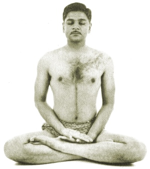

|
 |
Yoga |
 The Yoga Sutras of Patanjali
The Yoga Sutras of Patanjali
Another translation of this classic text of Yoga.
 How To Be A Yogi
How To Be A Yogi
by Swâmi Abhedânanda [1902]
A road-map of the Yogic schools.
 The Yoga Sutras of Patanjali
by Charles Johnston [1912]
The Yoga Sutras of Patanjali
by Charles Johnston [1912]
This concise work describes an early stage in the philosophy and practise of Yoga.
Dating from about 150 B.C., the work shows dualist and Buddhist influences.
Required reading if you are interested in Yoga or meditation.
 The Hatha Yoga Pradipika
The Hatha Yoga Pradipika
translated by Pancham Sinh [1914]
The oldest extant work about Hatha Yoga, including the full Sanskrit text.
 Thirty Minor Upanishads
Thirty Minor Upanishads
by K. Narayanasvami Aiyar [1914]
Thirty shorter Upanishads, principally dealing with Yogic thought and practice.
 Karma-Yoga
Karma-Yoga
by Swami Vivekananda [1921]
Can work be holy?
by Rishi Singh Gherwal [1930]
Excerpts from the shorter Yoga Vasishta
by Rishi Singh Gherwal [1930]
A source book on Kundalini; includes an English translation of the Lalita Sahasranama, the 'Thousand Names of the Goddess,' from the Brahmanda Purana.
by Ernest Wood [1954]
A review of the Yogic systems.
by Arthur Liebers [1960]
An introduction to modern Raja Yoga, with photos of asanas.
Yogi Publication Society
These are the Yogi Publication Society books specifically themed around Yoga, authored by William Atkinson under a variety of pseudonyms. There were many others published by the YPS, some of which can be found on the Esoteric Page. This is because they reflect Western Esoteric beliefs, rather than Hinduism, or Yogic knowledge.
 The Science of Breath
The Science of Breath
by Yogi Ramacharaka
(pseud. William Walker Atkinson)
[1904]
Yogic breathing exercises, a key to health and happiness.
 Raja Yoga
Raja Yoga
by Yogi Ramacharaka
(pseud. William Walker Atkinson)
[1906]
An early 20th century book on mental focus, repackaged as Raja Yoga.
 Yoga Lessons for Developing Spiritual Consciousness
Yoga Lessons for Developing Spiritual Consciousness
by A. P. Mukerji
(pseud. William Walker Atkinson?)
[1911]
Learn the secret techniques of the Yogis to conquer fear, de-hypnotize yourself, and build character...